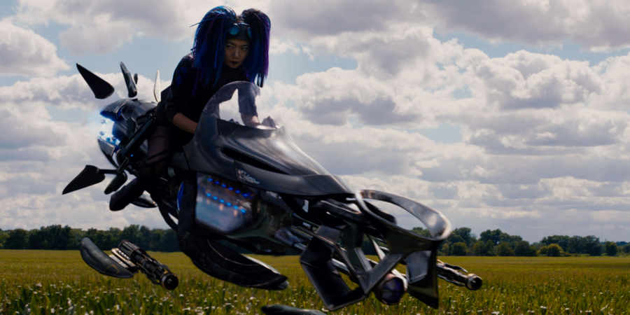
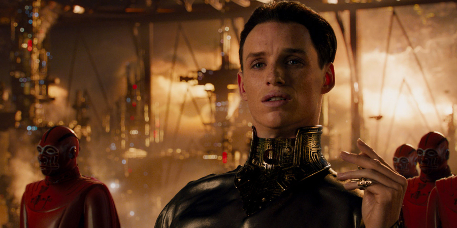

For the fans of science fiction, the name ‘Wachowski’ certainly doesn’t need an introduction. The Wachowskis (formerly known as the Wachowski Brothers, until Larry Wachowski, the older of the brothers, has undergone a transgender transition into Lana Wachowski) are American film screenwriters, directors and producers, responsible for unleashing on unsuspecting audiences the phenomenon known as The Matrix, which, with its never-seen-before visual effects such as bullet time slow-motion and incorporation of wire fu techniques broke many a convention on how an action movie should be made.
The Matrix received universal critical acclaim, with many critics calling it “ingenious” and “the most influential action movie of the generation”. The film also won four Academy Awards for film editing, visual effects, sound effects editing and sound, famously beating the unfortunate Star Wars Episode I: The Phantom Menace.
The Matrix had also a strong influence on action film-making in Hollywood and the commercial success of the movie (it became the fourth highest grossing film of the year, earning $464 million worldwide on a budget of $64 million) affected the approaches to fight scenes taken by subsequent Hollywood action films.
The film was followed by two sequels, The Matrix Reloaded and The Matrix Revolutions (with the former one receiving mostly positive, and the latter one somewhat mixed, reviews.
The latest two sci-fi films from the Wachowskis were generally well received V for Vendetta, and Cloud Atlas, with polarised reactions from both critics and audiences, which failed to generate the expected box office revenues. The Wachowskis were clearly in need of another hit.
Enter Jupiter Ascending, possibly their most ambitious project to date.
Jupiter Ascending is an American-Australian space opera written, directed and produced by Andy and Lana Wachowski and starring Mila Kunis, Channing Tatum and Eddie Redmayne in the main roles.
The story goes thus: Earth’s inhabitants are completely unaware that life on their planet, and countless other worlds, has been seeded by families of alien royalty millions of years ago with the aim of harvesting the evolved living creatures once they reach a ‘Darwinian state of perfection’ to produce a ‘youth serum’ that provides virtual immortality for its users. When the matriarch of the House of Abrasax, the most powerful of the alien royal families, dies, her children Balem (Eddie Redmayne), Kalique (Tuppence Middleton) and Titus (Douglas Booth) start warring over the inheritance. While Balem inherits an enormous production facility on Jupiter, Titus declares his intention to end the old ways and discontinue the ‘youth serum’ trade. The three discuss the Earth, apparently a centrepiece of their late mother’s real estate portfolio.
Meanwhile on the Earth, young house cleaner Jupiter (Mila Kunis) plans to sell her own eggs, so that she can buy a telescope she otherwise cannot afford. After Jupiter panics during the egg donation procedure, when the doctors and nurses turn out to be Balem’s agents sent to kill her, she is saved by Caine Wise (Channing Tatum), a genetically engineered ex-soldier, who was sent by Titus to track her down.
Alas, another group of bounty hunters kidnaps Jupiter and brings her to Kalique, who explains to Jupiter that she is the genetic reincarnation of Balem’s, Kalique’s and Titus’s mother, whose will stipulates that the Earth be passed to her reincarnation, should one emerge, instead any of her children. Caine retrieves Jupiter from Kalique and brings her to humanity’s original home world so that she can claim her inheritance.
On the way back to the Earth, Titus detains Jupiter and Caine. He reveals that he plans to enter into a sham marriage with Jupiter before killing her and claiming the Earth for himself. Titus throws Caine into the void, but he survives and saves Jupiter at the altar. In yet another twist of events, Jupiter finds her family being taken hostage by Balem, who demands the Earth in exchange for their lives. Jupiter will have to make the most difficult decision of her life: she can either save her loved ones, or the billions of people on the Earth.

Boasting elaborate and genuinely impressive visual effects, the storyline of Jupiter Ascending zooms, at the speed of light, to-and-fro between the Earth and Jupiter (and beyond), from one stunning setting to another, with the wafer-thin narrative sandwiched between the awesome starship dogfights and breathtaking interplanetary battles. One cannot help but feel that the sheer scale and complexity of this enormous project overwhelmed the Wachowskis to a degree that they lost the ability to focus on the actual storytelling, leaving huge logical gaps in the storyline.
After the lukewarm reception and box office failure of the Cloud Atlas, the Wachowskis were in desperate need of another blockbuster that would match the critical and commercial success of The Matrix. What they got instead, is a box office bomb in the form of Jupiter Ascending.